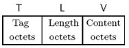
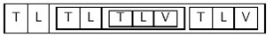
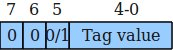
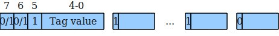

前言
在上篇文章中，我们已经提取到了签名二进制数据，使用的是 ASN.1 语法 BER 编码格式，
那么如下为关于 ASN.1 和 BER 的简单介绍，以及其对应的解析方法。
ASN.1介绍
ASN.1 是一种 抽象语法标记 语言，本身只定义表示信息的抽象句法，并没有对编码的方法做出限定。
其可以使用的编码规则有很多，这里使用的是基本编码规则 BER，即 Basic Encoding Rules 。
在上篇文章给出的微软链接 Authenticode_PE.docx 文档中，有关于签名的具体 ASN.1 结构体定义。
另外微软关于 BER 的一些知识也做了说明，相关链接如下：
https://docs.microsoft.com/en-us/windows/win32/seccertenroll/distinguished-encoding-rules
BER编码规则介绍
BER语法的格式是 TLV 三元组 <Type, Length, Value>，如下图所示

该三元组整体可以作为 Value 进行嵌套或者组合，如下图所示

BER语法是基于八位组大端编码的，高位在左，底位在右。
Tag的格式
Tag的格式按位数划分，如下图所示

第7,6位指明Tag的类型。第5位指明该类型以 primitive 方式编码还是 constructed 方式编码
| 第7,6位 | 类型 | 说明 |
|---|---|---|
| 00 | UNIVERSAL | 标准类型，规定的固定类型 |
| 01 | APPLICATION | 唯一标志应用内的类型，不推荐使用 |
| 10 | context-specific | 由上下文指定类型，在SEQUENCE、SET和CHOICE类型中使用 |
| 11 | PRIVATE | 在小范围内唯一标志一个类型，不推荐使用 |
其中 UNIVERSAL 类型规定的固定类型如下所示
| 第4-0位 | 说明 |
|---|---|
| 0 | 保留 |
| 1 | BOOLEAN |
| 2 | INTEGER |
| 3 | BIT STRING |
| 4 | OCTET STRING |
| 5 | NULL |
| 6 | OBJECT IDENTIFIER |
| 7 | ObjectDescripion |
| 8 | EXTERNAL,INSTANCE OF |
| 9 | REAL |
| 10 | ENUMERATED |
| 11 | EMBEDDED PDV |
| 12 | UFT8String |
| 13 | RELATIVE-OID |
| 14 | 保留 |
| 15 | 保留 |
| 16 | SEQUENCE,SEQUENCE OF |
| 17 | SET,SET OF |
| 18 | NumericString |
| 19 | PrintableString |
| 20 | TeletexString,T61String |
| 21 | VideotexString |
| 22 | IA5String |
| 23 | UTCTime |
| 24 | GeneralizedTime |
| 25 | GraphicString |
| 26 | VisibleString,ISO646String |
| 27 | GeneralString |
| 28 | UniversalString |
| 29 | CHARACTER STRING |
| 30 | BMPString |
| 31 | 保留 |
如果Tag大于0x30，当第1个字节低5位全部为1时，后续的字节最高位为1表示还有，为0表示Tag结束

Length的格式
Length 表示 Content 的字节长度，如果 Content 超过127个字节，还需要增加表示 Length 的长度，
方法为在长度数据的前边添加 0x80，比如 0x30 82 01 10 这里的 0x82 表示后边2个字节都是长度数据。
对象标识符
对象标识符（OBJECT IDENTIFIER, OID）类型，用层次的形式来表示标准规范，标识符树通过一个点分的
十进制符号来定义，这个符号以组织、子部分、标准的类型和各自的子标识符开始。
例如：MD5的OID是 1.2.840.113549.2.5 表示为 iso(1),member-body(2),US(840),rsadsi(113549),
digestAlgorithm(2),md5(5)。
OID的编码规则：将前两部分定义为x.y，合成为一个字节40*x+y，其余每个部分按照big-endian格式，
按照7个bit位进行分割，每个分割出来的片段第8标为1，组成一个字节，最后一个片段第8位标为0。
例如：MD5的计算方式为，原始数据为(42,840,113549,2,5)，按照7位分割后((0x2A),(0x86,0x48),
(0x86,0xF7,0x0D),(0x02),(0x05))，最终 TLV 编码为 0x06 08 2A 86 48 86 F7 0D 02 05 。
如下为微软给出的OID信息如何计算的链接：
https://docs.microsoft.com/en-us/windows/win32/seccertenroll/about-object-identifier
查找签名的代码
查找签名的过程，就是循环解析 TLV 三元组信息，找到签名对应的 OID 信息
1 | NTSTATUS CheckSign(IN PUCHAR Buffer, IN UINT32 Size) |
解析Tag的函数
1 | BOOLEAN Asn1BerTagDec( |
解析Length的函数
1 | BOOLEAN Asn1BerLenDec( |